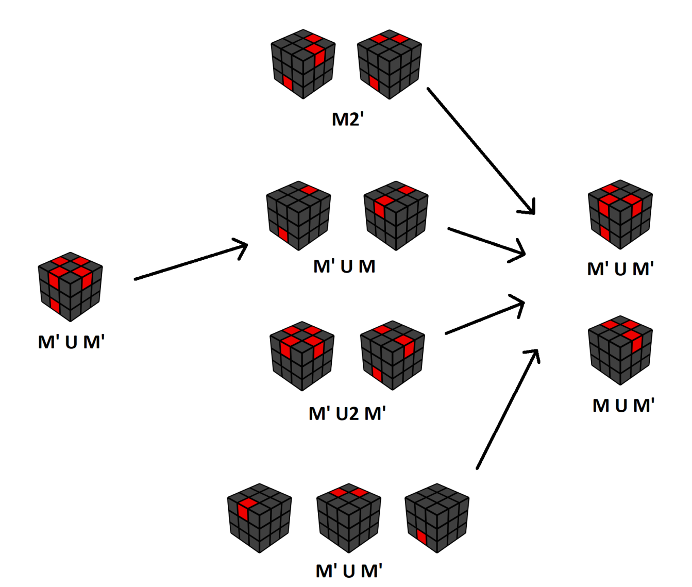

后六棱色向
这一步骤是桥式解法中最为困难的部分。如果你感觉理解起来很吃力，可以在学习完“箭头”情形后，直接阅读复原流程图：了解具体的流程之后，再理解基本操作三~六的思想。
目标
这步要将顶层和底层上剩余的块的色向还原正确，主要解决的是剩下6个棱块的色向。这步又叫做EO (Edges Oriented)。
“色向”这个词在CMLL中已经提及过。所谓块的色向(orientation)，在这里指的是块沿着上下方向的朝向。例如，某个块含有黄色面，在其朝向正确时，黄色面是向上的。而在它色向正确时，黄色面不仅可以朝上，还可以朝下。
以下是一个色向还原正确的具体例子。你可以拖动魔方，查看底层的状态：
在下图中，色向错误的棱块数量为4。
为了直观，我们只使用红色标出上下两层中，色向错误的棱块面的位置。注意它不代表真正的红色面。
中心块的色向通过一步Mx就能解决，我们先还原它们，再处理剩下6个棱块的色向。
在这里，黄色中心块在顶层并不比在底层更好。
下面的介绍中，通过Ux能够相互转换的情形视为同一种情形。
恰有4个色向错误的棱块的复原
箭头(Arrow,或3-1)
箭头的顶层有3个色向错误的棱块，底层有1个。通过做Ux可调整其形态如下：
箭头一：
箭头二：
不管哪种箭头，上面的朝向使得4个色向错误的棱块分为两对：一对左右相对，一对上下相对。
为了解决箭头的情形，我们引入两类基本操作：
基本操作三： M' Ux Mx
这里，Ux被限制为U或U'，Mx也被限制为M'或M，因此共有4种组合。其作用是改变箭头一中标红位置的棱块的色向，例如：
或者：
等等。可以看到执行完基本操作三后，4个红色面都移向了侧面，意味着其对应棱块的色向已改变。剩余两个棱块虽然没有标出，但它们的移动效果和M0或M2是一样的，因此色向不会变化。
基本操作四： M Ux Mx
与基本操作三相比，其第一步换成了M，而Ux与Mx同样被限制为90°转动。其作用是改变箭头二中标红位置的棱块的色向，例如：
因此，基本操作三和基本操作四能够改变特定的四个棱块的色向，并能直接解决箭头的情形。
“箭头”是最简单的情形。后续所有的情形，都将先转化为“箭头”情形，然后复原。
2a-2
2a-2情形的含义为："2a"代表顶层有2个色向错误的棱块，并且位置相邻(adjoin)；"-2"代表底层有2个色向错误的棱块。后边情形的命名方式都与此类似。
和“箭头”相比，2a-2的顶层少了一个色向错误的棱块，而底层多了一个。
顶层上位于M层的两个棱块中，恰有一个色向错误。如果做M2，将改变M层的四个棱块的上下位置。这样，色向错误的棱块数不变（4个），而底层将恰有一个色向错误的棱块，因此转化为“箭头”情形。
进而可以得出一种完整的复原过程：
2o-2
2o-2情形下，"2o"代表顶层有2个色向错误的棱块，并且位置相对(opposite)；"-2"代表底层有2个色向错误的棱块。
与2a-2情形一样，2o-2中色向错误的棱块数也是4个。对于2a-2，我们使用M2让顶层和底层的四个棱块两两互换，从而将顶层色向错误的棱块数改变为3，转化为“箭头”。这里用同样的办法就不能奏效了。
我们再引入两类基本操作，以完成上下两个棱块的单独互换，并且不改变所有棱块的色向：
基本操作五： M' U2 M
将M层与F层（前面）交界的两个棱块（UF位、DF位）位置互换。
可以发现,交换位置的两个棱块的色向都没有改变，即一个正确、一个错误。
基本操作六： M U2 M'
将M层与B层（后面）交界的两个棱块（UB位、DB位）位置互换。
因此，当两个互相交换的棱块有不同的色向时，这两类基本操作能将顶层色向错误的棱块数增加或减少一个，同时保证色向错误的棱块总数不变。
对于2o-2情形，可以做基本操作五：
在F面上，一个底层色向错误的棱块与一个顶层色向正确的棱块交换，便转化为“箭头”。
基本操作六同样可行：
4-0
4-0情形下，顶层有4个色向错误的棱块，而底层没有。
可以想象，M2就能将4-0转为2o-2的情形，然后再做M U2 M'转化为“箭头”，因此合并为M' U2 M'：
其他情形的复原
我们已经展示了恰有4个色向错误的棱块的情形，转化为“箭头”情形的办法。
色向错误的棱块数不为4的情形，共有5类：
4-2
1-1
或：
2a-0
2o-0
0-2
其统一的复原步骤如下：
基本操作三或四能够同时改变4个棱块的色向。除非这四个位置恰好有两个色相错误的棱块，否则基本操作三、四一定会改变色向错误的棱块总数。
复原流程图
直观的复原流程图（作者：甘浩東/Anto Kam）如下，其中也包括了上一节的情形：
在这张图中，红色棱块代表色向错误的棱块。图中无法看到DB位置棱块的色向，但请记住：色向错误的棱块总数一定为偶数。因此从图中就能足够推断它的色向情况。
不要去硬记每种情形的完整转换公式。应当将复原流程与基本操作三~六的功能联系起来，理解基本操作三、四是如何改变色向错误的棱块总数，基本操作五、六是如何改变色向错误的棱块的分布的。
注意每次转换完成后，还需要通过Ux，调整为图中相应的朝向。